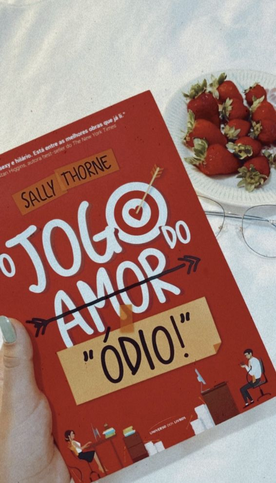
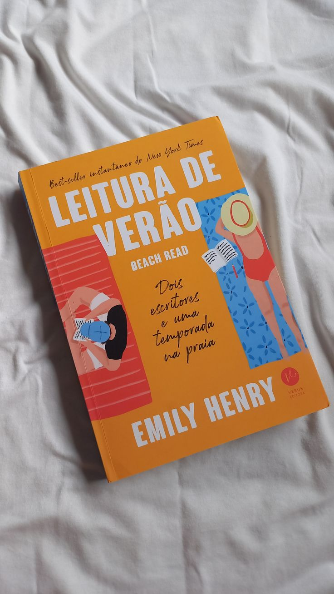
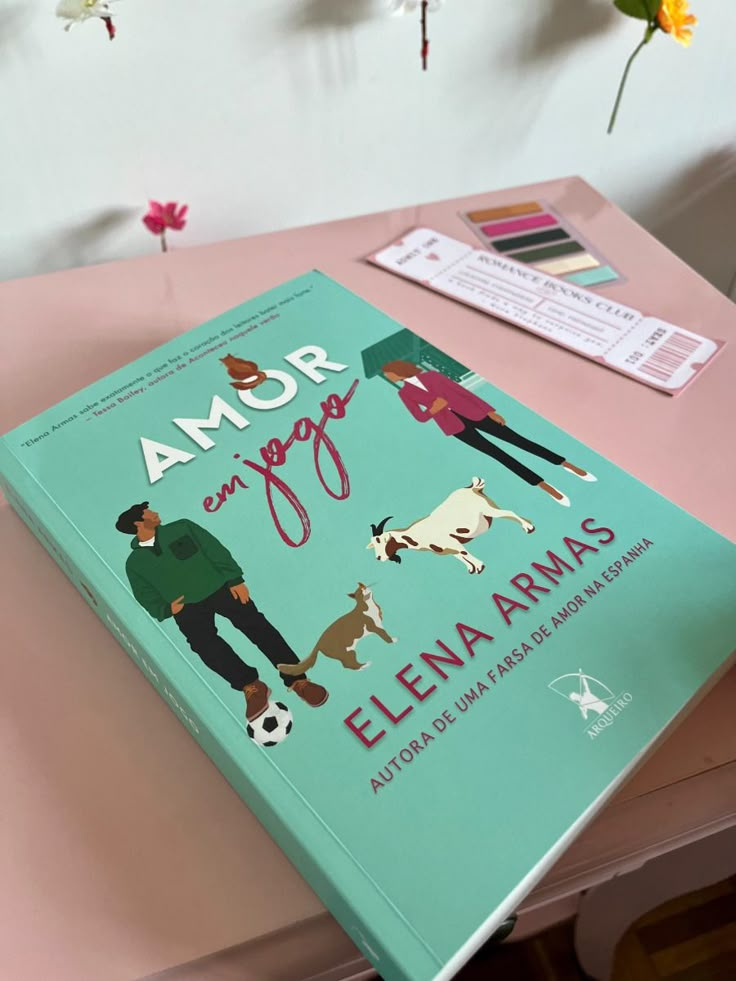
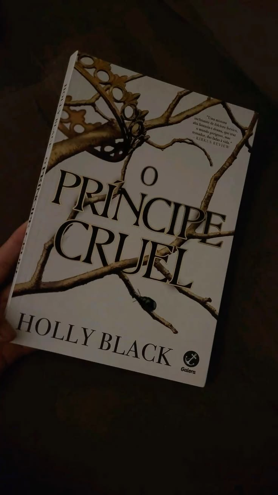
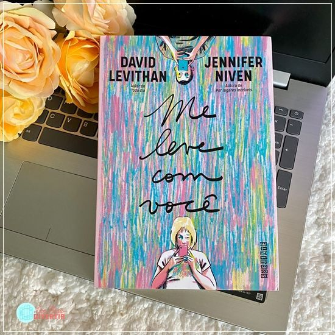
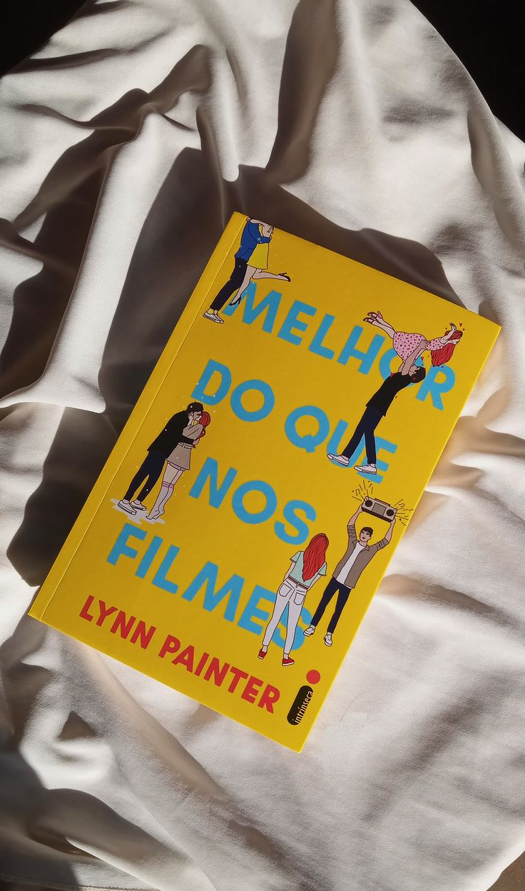
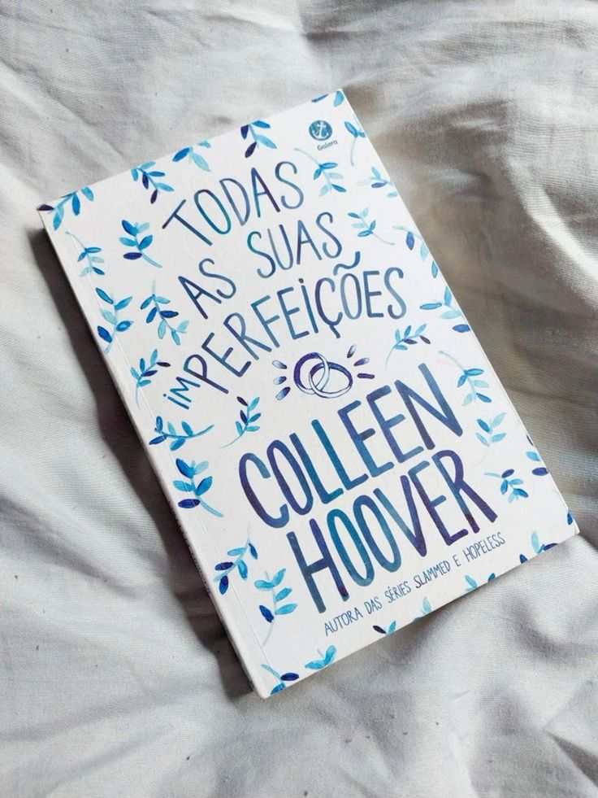
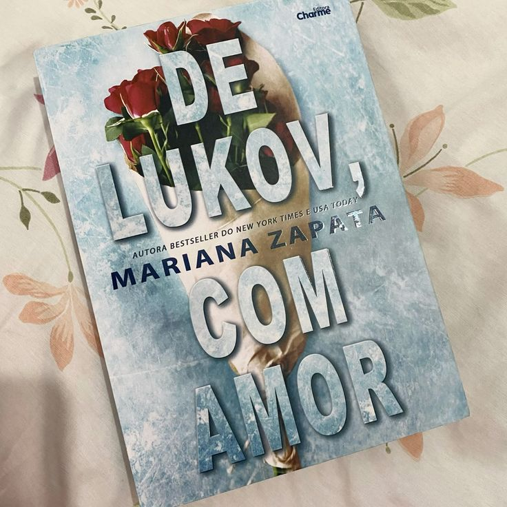
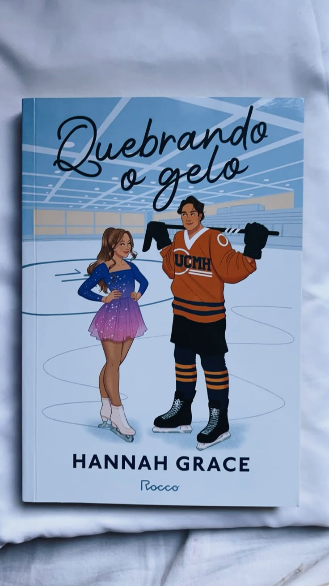
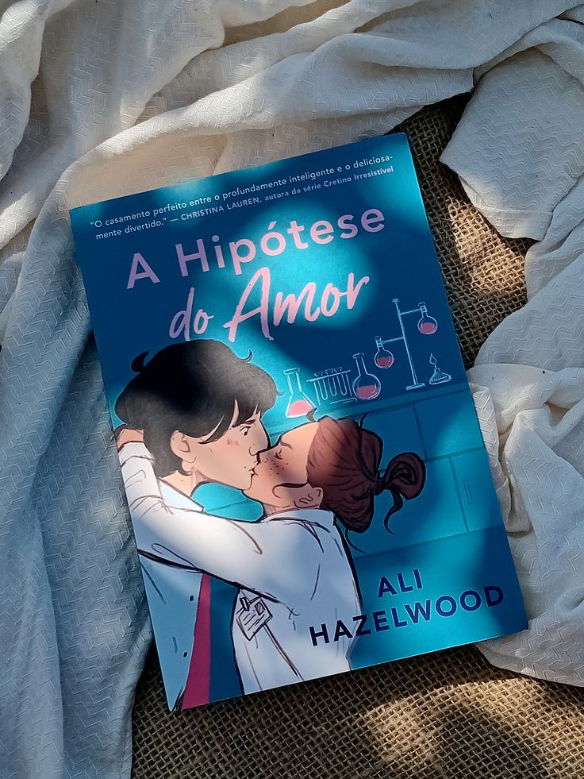

Fizemos este site para iniciantes na leitura de romances. Aqui você irá encontrar os top 10 melhores romances para ler.
Lucy Hutton e Joshua Templeman são assistentes dos diretores de uma editora e dividem a mesma sala. O problema? Eles se odeiam mortalmente. Quando uma nova vaga de diretoria executiva surge, a rivalidade profissional entre os dois atinge o limite, iniciando um jogo implacável de provocações. É um clássico moderno do gênero. As dinâmicas de escritório e os jogos mentais entre eles mostram como a linha entre o ódio e a obsessão é extremamente fina.

January é uma escritora de romances que acredita em finais felizes. Augustus escreve ficção literária séria e acredita que o amor verdadeiro é um mito. Vizinhos de porta durante as férias de verão e sofrendo de bloqueio criativo, eles fazem uma aposta: January deve escrever um livro sombrio e Augustus uma história feliz. O livro equilibra momentos de humor ácido com debates profundos sobre a vida e o luto. A química entre os dois autores é madura e apaixonante.

Catalina Martín precisa desesperadamente de um acompanhante para o casamento da irmã na Espanha, e ela cometeu o erro de mentir dizendo que tem um namorado americano. Aaron Blackford, o colega de trabalho condescendente e irritante que ela não suporta, se oferece para o papel. Se você gosta do famoso (aquele romance que vai cozinhando bem devagar), a tensão acumulada entre a teimosia de Catalina e a paciência de Aaron é perfeita.

Jude é uma garota humana que foi criada no Reino das Fadas após o assassinato de seus pais. Para sobreviver e conquistar seu lugar na corte, ela precisa enfrentar o cruel e arrogante Príncipe Cardan, o filho mais jovem e problemático do Rei Supremo. É a definição literal de "inimigos". Não há romance fácil aqui; é uma disputa de poder perigosa, manipulação e uma das químicas mais intensas do mundo da literatura jovem-adulta.

Mara, Sadie e Hannah são três cientistas que encontram o amor em lugares inesperados. Nesta coletânea de novelas, cientistas brilhantes precisam lidar com engenheiros e rivais de laboratório que parecem determinados a sabotar suas pesquisas (e seus corações). Histórias rápidas, dinâmicas e cheias de piadas intelectuais. Perfeito para ler em uma única tarde e sair de qualquer ressaca literária.

Liz Buxbaum é uma romântica incurável que quer conquistar o garoto que voltou para a cidade. Para chamar sua atenção, ela precisa da ajuda de Wes Bennett, seu vizinho irritante e parceiro de provocações desde a infância. Mas o plano começa a desandar quando Liz percebe que Wes não é tão ruim assim. Um romance super fofo, leve e nostálgico. Wes Bennett vai entrar direto para a sua lista de namorados literários favoritos.

Quinn e Graham pareciam ter o casamento perfeito, mas a dolorosa luta contra a infertilidade transforma o amor deles em um campo de batalha silencioso. A narrativa alterna de forma brilhante entre o passado apaixonante e o presente devastador, onde cada conversa evitada aumenta a distância entre os dois. Acompanhar duas pessoas que se amam profundamente tentando resgatar o que sobrou de sua conexão sob o peso da frustração e da culpa é doloroso e, ao mesmo tempo, completamente viciante.

Jasmine Santos dedicou a vida à patinação artística, mas sua carreira está estagnada. Quando a oportunidade de sua vida surge, ela vem com um preço: patinar em dupla com Ivan Lukov, o campeão mundial arrogante que ela detesta há anos. Mariana Zapata é a rainha do romance lento. O ódio inicial se transforma em uma das amizades e parcerias mais sólidas e emocionantes que você já leu antes do romance finalmente acontecer.

Anastasia é uma patinadora artística obcecada por organização. Nate é o capitão do time de hóquei que preza pelo caos. Quando um mal-entendido força os dois times a dividirem o mesmo ringue de gelo, os mundos opostos de Anastasia e Nate colidem de forma explosiva. É um dos maiores fenômenos literários recentes. Além do romance quente e das provocações, o livro traz um grupo de personagens secundários apaixonantes.

Olive Smith é uma estudante de doutorado que não acredita em relacionamentos duradouros. Para convencer sua melhor amiga de que está namorando, ela entra em pânico e beija o primeiro homem que vê pela frente: Adam Carlsen, o jovem professor do departamento conhecido por ser um tirano com os alunos. Para a surpresa dela, ele topa manter a farsa. O topo da nossa lista não poderia ser outro. Este livro revitalizou o gênero nas redes sociais. A mistura de mentiras acadêmicas, um protagonista masculino secretamente protetor e o humor inteligente fazem dele o melhor livro dos últimos tempos.
